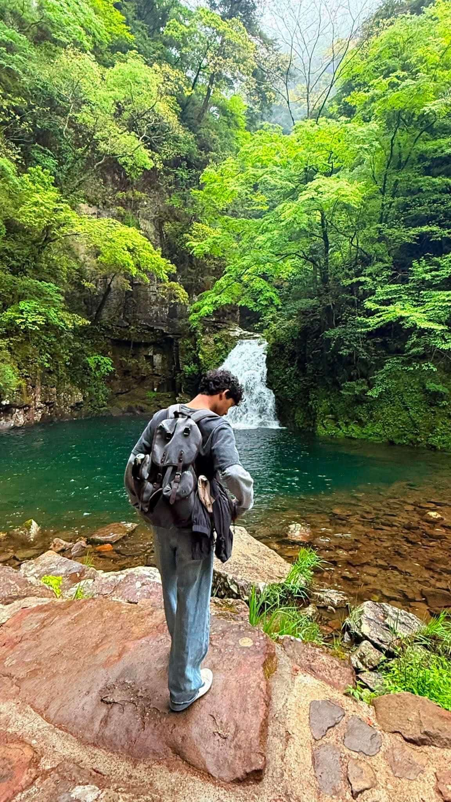

ITを始めたきっかけ
私がITに興味を持ったきっかけは、ネパールで初めてプログラミングを勉強したことです。そのとき、照明をコントロールする小さなプロジェクトを作りました。コードを書くことだけではなく、「なぜこのように動くのか」というプログラムの仕組みや考え方に興味を持ちました。そして、自分のアイデアが実際に動くものになることにも面白さを感じました。この経験から、もっと本格的にITを勉強したいと思うようになりました。
ようこそ！はじめまして
ビ ケ サッチャ ラーズ
ネパール出身、25歳です。 現在、奈良コンピュータ専門学校でITを学んでおり、HTML・CSS・JavaScript・PHP・C言語などを習得しながら、フルスタックWeb開発者を目指して日々勉強に励んでいます。

はじめまして、Satya Rajです。現在、日本の奈良コンピュータ専門学校でITを勉強している学生です。将来は、フルスタックエンジニアを目指しています。
Don Bosco Institute Techo Lalitpur でITを学ぶ。3人チームのリーダーとして照明コントローラーを制作。
大和教育学院日本語学校で日本語を学ぶ（2024年3月卒業）。
ITリテラシー科で HTML・CSS・JavaScript・PHP・C言語を学ぶ。
日本語能力試験 N3（2024.12）、N2（2025.07）、初級CAD検定（2026.07）に合格。
授業に加えて、オンライン教材やYouTubeで独学を続けています。
Web開発・システム開発のエンジニアとして働くことを目指しています。
私がITに興味を持ったきっかけは、ネパールで初めてプログラミングを勉強したことです。そのとき、照明をコントロールする小さなプロジェクトを作りました。コードを書くことだけではなく、「なぜこのように動くのか」というプログラムの仕組みや考え方に興味を持ちました。そして、自分のアイデアが実際に動くものになることにも面白さを感じました。この経験から、もっと本格的にITを勉強したいと思うようになりました。
私は、海外でITを勉強しながら、違う文化を経験し、自分自身にも挑戦したいと思い、日本に来ました。新しい言語を勉強したり、新しい環境に慣れたり、さまざまな国の人と出会ったりすることで、自分の成長につながったと感じています。また、一人で生活することで、自立する力も身につけることができました。
最近は、AIを使ってアイデアを実際のプロトタイプにすることにも挑戦しています。現在取り組んでいるプロジェクトの一つは、収入や支出を管理する家計管理アプリです。メールに届いた買い物などの情報を読み取り、自動で記録できるようにするほか、ユーザーが手動で入力することもできます。将来的にはこのアプリをApp Storeで公開したいと考えており、アプリを実際に公開するまでの流れについても学びたいと思っています。
IT以外では、音楽を聴いたり、映画を見たり、旅行をしたりすることが好きです。友達とハイキングに行くことも好きで、歌うことも好きです。ときどきカラオケにも行きます。
私は毎日、興味を持ったことに挑戦し、新しいことを学ぶことを大切にしています。失敗は終わりではなく、成功に近づくための一つの経験だと考えています。これからも失敗を恐れず、新しいことに挑戦し、意味のあるものを作りながら、毎日少しずつ成長していきたいです。
収入や支出を管理するアプリ。メールに届いた買い物情報を読み取って自動で記録し、手動入力にも対応。将来的にApp Storeでの公開を目指しています。
高校時代、3人チームのリーダーとして、Arduinoで照明の明るさを調整するコントローラーを制作。私はC言語でのプログラミングを担当しました。
高校時代、私は3人のグループで「照明の明るさを調整するコントローラー」を作るプロジェクトのリーダーを務めました。Arduinoを使用し、ランプやコンバーターなどの電子部品を組み合わせてシステムを作りました。私はC言語を使ったプログラミングを担当し、他のメンバーは電子部品の組み立てや配線を担当しました。
プロジェクトの途中では、プログラムのエラーや電子部品が正しく動作しないなど、いくつかの問題が発生しました。そこで、インターネットでプログラムや回路について調べ、別の方法を試しながら問題を解決しました。何度も失敗しましたが、メンバーと協力して改善を続け、最終的にプロジェクトを完成させることができました。そして、完成した装置を先生に提出しました。
この経験を通して、プログラミングや電子部品の問題を解決する力だけでなく、チームをまとめて最後までプロジェクトを進めるリーダーシップも身につけました。
HTML
CSS
JavaScript
PHP
C言語
ネパール語
母国語日本語
JLPT N2英語
中上級ヒンディー語
中上級ご興味を持っていただき、ありがとうございます。お気軽にご連絡ください。